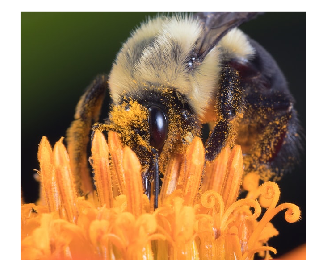
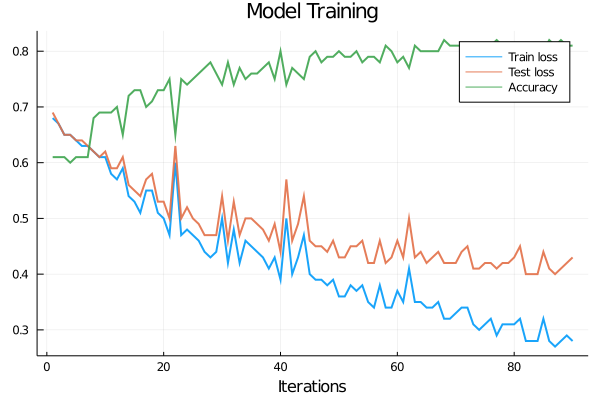
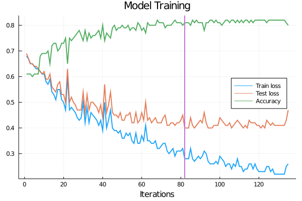

Chapter 10 Image classification
10.1 Bee population control: What would happen if bees go extinct?
You may or may not like bees. Either if you are afraid of them stinging you, or if you are addicted to the golden and sweet substance they produce, there is something we must agree on: their crucial role in maintaining the balance in the natural ecosystem, and in particular, they are vital for our human interests also. Bees are one of the biggest contributors to pollination of plants, hence their existence is so important to all lifeforms, and also to our economy. In fact, almost 70% of the production of fruits, vegetables and seeds depend directly on this pollination process to happen.

Unfortunately, the bee population has been declining over the past years, not only for the case of wild bees but for commercial honey bees also. Some of the reasons that scientists are considering are the appearance of species of mites, viruses and parasites that have been infecting some colonies, as well as the usage of insecticides over crops that affect the bees nervous system when they are in the process of pollinating and drinking nectar, among others. Being so important, a lot of effort is being done to control and monitor the bee population. In this chapter, we will build a simple computer vision model using convolutional neural networks, a standard deep learning technique used nowadays that has become one of the best for working with images. This model will help us in a classification between bees and wasps. A group of ecology researchers has settled up a system of cameras in some strategic areas to help with the monitoring of different animals, and our job will be to implement an algorithm that can automatically classify between bees and wasps.
10.2 Machine Learning Overview
Let’s dive in to understand a little about this neural network thing first. It may sound a little bit intimidating at first, but the clue is to take it easy. To put things in context, neural networks are part of the machine learning set of models, which at the same time are included in what is called artificial intelligence. This name references programs that are made to solve problems or tasks that are easy for people to perform but hard to describe in a formal way, something that is an obligation for any computational task. The approach to this type of problems is to let computers learn from experience, so the need for a formal specification of the problem is avoided. This is where the name machine Learning takes its roots. The model parameters –which can scale up to a size of millions– are learned –fitted– from the data instead of hardcoding them. This is why the data gathering, munging and cleaning processes are so important. Not only from an efficiency and accuracy perspective, but most importantly from an ethical one. It is essential for everybody who is implementing or training a model to consider how it will be used.

10.3 Neural networks and convolutional neural networks
In the big set of models classified as artificial intelligence, one of the most basic steps when facing a problem is the task of feature engineering or feature extraction from the data. Features can be defined as properties that are relevant to our model and that summarize the data in some way. For example, if we are working with sound data and we want to make a pitch classifier, we could extract features from the raw data as averages of spectral power in different frequency ranges. A similar approach can be thought when working with images, taking the averages of different colors may be relevant for certain classification problems. For a lot of tasks, knowing the features that should be extracted beforehand may be a cumbersome problem. In fact, machine learning may be used to learn what features are the most relevant for a particular situation also. This is what is called representation learning. Representations learned from the data have usually a better performance than the human-designed ones. However, learning representations is a difficulty on its own. And here is where deep learning appears in play. Deep learning models are characterized by learning representations that are expressed in terms of other representations. In this way, high-level representations –the harder ones to learn for computers and the most intuitive por humans– are built from simpler ones, and they are organized in layers accordingly. The word deep in deep learning makes reference to this layered structure of these models. These layers are constituted by neurons that are activated in a non-linear fashion by the activation of neurons at the previous layer. What do we mean by non-linear? It literally means there is not a linear relationship between the input of the neuron and its output. Consider the sigmoid function:
begin
gr()
plot(-10:0.5:10, sigmoid.(-10:0.5:10), label=false, title="sigmoid function", lw=2, size=(400, 300), color="Green")
end
The reason why non-linear functions are used here is that they allow rich and complex representations to emerge, in contrast to linear functions. The architecture of the connection between these neurons will depend on the neural Network model we want to implement. Just to name a few, there exist: * Fully connected or dense layers * Convolutional layers * Recurrent layers Each one of these has a special area of application. We will be focusing on convolutional neural networks here, composed of convolutional layers. But first, lets build a little intuition about how a trained neural network works and how it was trained. A typical representation of how a neural network operates looks something like this:

Given some input data (in this case, pixel data) in the input layer, each neuron of the next layer is activated in some way and then this activation is fed to the next layer in the hidden layer, and so on until the output layer is reached, and depending the activation of each of these neurons in the last layer, the algorithm classifies the image between dog, bird or cat. Each of these layers is composed of neurons that are activated by increasingly more complex abstractions or features of the image. For example, the neurons of the first hidden layers may be activated with very basic geometrical shapes, boundaries, or color gradients on the image. The neurons in the next layer may use a combination of the activation of these first neurons and hence be activated by higher-level representations built from the simpler ones, like an eye, an ear or a peak. Going on with this process, the last layer of neurons activate for very high-level abstractions, like a dog, a bird and a cat, all this because the network was trained for this task. But what on earth does this training process look like? We are now going to dive deeper in understanding this.
Essentially, we can think of a neural network as a machine that receives some input and spits out some output. This machine has a lot of knobs –speaking mathematically, parameters– that determine how it performs. The number of knobs and how they relate to one another will depend on the internal architecture of the network, but the actual value to what they are set will depend on the training process it has been subject to. When we first instantiate our model –or machine–, we expect it to be untrained unless we do something called transfer learning, that is, instantiate an already pre-trained model so that we save some time in doing the learning step. With an untrained model, what we would get is randomly set knobs and we would like to find the right setting for the machine to work as we intend it to. But because there are so many of these knobs and their interactions are so complex, this task is far from trivial. What can we do? The way to handle this in Machine Learning is, in the first place, by defining a loss (or cost) function. Loss functions are a concept that is ubiquitous in this field. These are functions that impose a measure of the model performance. We feed our model with some input which we know its corresponding output. We register the output of the model and we calculate the loss function. Depending on the chosen loss function, the penalization to the model performance will be different. The next step will be to adjust the knobs so our model will perform better. This is where the loss function will help. If you have some basic understanding of Calculus, you will know about derivatives of a function. When we take the derivative of some function and we evaluate it in a point of its domain, that value represents the rate of change of our original function in that point. In multidimensional Calculus, that is, Calculus applied on functions with a lot of variables –as it is our case–, we can calculate the Gradient of that function, which gives us the direction with the highest rate of change. That is, if we move in variable space along that direction giving a tiny step, the value of the function will grow the most. By the same token, if we move on the opposite side to the gradient, the function will decrease the most. Returning to the particular case of the loss function, if we move in the direction opposite to the gradient, the loss will decrease the most and, conversely, the model will perform slightly better. What we refer as moving in the opposite direction to the gradient here is exactly the recipe of how to tweak our model parameters (knobs) to increase the performance. This process takes the name of Gradient Descent, and it is the fundamental tool for training our machine. Applying it in an iterative manner, hopefully will lead the model to a minimum of the loss function and its performance will be close to perfect.
As for almost every recipe, there are some limitations and considerations about it. This is not a golden rule. Due to the complexity of the models and the high-dimensionality that characterize some neural network models, such global minima may be difficult to achieve or very computationally expensive, among other complications. To tackle some of these, various optimizers had been implemented to update the parameters of the model in the most efficient way.
Now that we have a general idea of what deep learning and neural networks are, let’s start building our bee vs. wasp classification apparatus and try to help in their population monitoring. We will be using Flux, a Machine Learning framework written entirely in Julia, and that interacts with many other packages on the ecosystem. First, we will import some necessary packages
The dataset we will be working with is available to us, once again, thanks to Kaggle. It consists of 3184 images of bees and 4945 of wasps. These are RGB images, meaning that they contain the information of colour. Also, they come in a variety of different sizes. Digital images are composed of pixels, which are the minimum piece of information in them. In a colored image, each pixel has three channels: R for Red, G for Green and B for Blue. As their names imply, these channels give the information of the value of red, green and blue colors in that pixel. For the human vision, a combination of these channels is sufficient to perceive any color in our visual spectrum.
Gray scale images, on the other hand, have only one channel per pixel, that is associated with the amount of light coded in that pixel. Naturally, working with gray scale images is easier from a computational perspective. For our problem, we want to stay as simple as possible, so we are going to transform all images to gray scale. As we are dealing with a simple classification problem, the color information probably won’t contribute too much, so we can save some training time using gray scale images. We would also resize all images to a common size, another simplification we are adopting to our problem, making them smaller, but not too small so we don’t lose a lot of information that could be valuable for the network.
The functions defined below will help us with this pre-process and then we load our gray scale images. We will use a resolution of 90x90 for our processed images.
function resize_and_grayify(directory, im_name, width::Int64, height::Int64)
resized_gray_img = Gray.(load(directory * "/" * im_name)) |> (x -> imresize(x, width, height))
try
save("preprocessed_" * directory * "/" * im_name, resized_gray_img)
catch e
if isa(e, SystemError)
mkdir("preprocessed_" * directory)
save("preprocessed_" * directory * "/" * im_name, resized_gray_img)
end
end
end## resize_and_grayify (generic function with 1 method)function process_images(directory, width::Int64, height::Int64)
files_list = readdir(directory)
map(x -> resize_and_grayify(directory, x, width, height), files_list)
end## process_images (generic function with 1 method)n_resolution = 90## 90begin
process_images("10_bees_vs_wasps/data/bee1", n_resolution, n_resolution)
process_images("10_bees_vs_wasps/data/bee2", n_resolution, n_resolution)
process_images("10_bees_vs_wasps/data/wasp1", n_resolution, n_resolution)
process_images("10_bees_vs_wasps/data/wasp2", n_resolution, n_resolution);
endbegin
bee1_dir = readdir("preprocessed_10_bees_vs_wasps/data/bee1")
bee2_dir = readdir("preprocessed_10_bees_vs_wasps/data/bee2")
wasp1_dir = readdir("preprocessed_10_bees_vs_wasps/data/wasp1")
wasp2_dir = readdir("preprocessed_10_bees_vs_wasps/data/wasp2");
end;begin
# we load the pre-proccessed images
bees1 = load.("preprocessed_10_bees_vs_wasps/data/bee1/" .* bee1_dir)
bees2 = load.("preprocessed_10_bees_vs_wasps/data/bee2/" .* bee2_dir)
wasp1 = load.("preprocessed_10_bees_vs_wasps/data/wasp1/" .* wasp1_dir)
wasp2 = load.("preprocessed_10_bees_vs_wasps/data/wasp2/" .* wasp2_dir);
end;# we concatenate all bees and wasp images
bees = vcat(bees1, bees2);wasps = vcat(wasp1, wasp2);data = vcat(bees, wasps);At this point, our data is ready and loaded, but we have a little work to do before we start building our network. We will first label our images with a 0 for bees and a 1 for wasps, and then, as we already did in the email spam filter chapter, we will split our data and labels in a training and a test set. Again, this is the standard procedure to ensure our model is giving meaningful results.
begin
labels = vcat([0 for _ in 1:length(bees)], [1 for _ in 1:length(wasps)])
(x_train, y_train), (x_test, y_test) = splitobs(shuffleobs((data, labels)), at = 0.7)
end;Neural networks can be trained more efficiently when data is past forward in small groups or batches of data, instead of individually. This is also a standard procedure when working with neural networks. The function below groups the data into minibatches for a later training of the network. We then create the minibatches, specifying a batchsize of 128.
# this function creates minibatches of the data. Each minibatch is a tuple of (data, labels).
function make_minibatch(X, Y, idxs)
X_batch = Array{Float32}(undef, size(X[1])..., 1, length(idxs))
for i in 1:length(idxs)
X_batch[:, :, :, i] = Float32.(X[idxs[i]])
end
Y_batch = onehotbatch(Y[idxs], 0:1)
return (X_batch, Y_batch)
end## make_minibatch (generic function with 1 method)begin
# here we define the train and test sets.
batchsize = 128
mb_idxs = partition(1:length(x_train), batchsize)
train_set = [make_minibatch(x_train, y_train, i) for i in mb_idxs]
test_set = make_minibatch(x_test, y_test, 1:length(x_test));
end;Finally now we are ready to define our convolutional neural network model. But first, let’s talk a little more about the details of these networks. What makes them special? What does it mean to be convolutional?
Convolutional neural network or CNNs, are a special kind of neural networks, which have shown a great performance for computer vision tasks and, in general, working with images. When we talk about these kind of networks, usually we mean they have one or more convolutional layers in their architecture, but generally that is not the only thing they are composed of. You can think about a convolutional layer as one consisting of a certain number of mini-images. These mini-images are called filters and they play the role of the neurons we talked earlier. Indeed, filters are what make this layer convolutional. They pass through the entire image and they compute how much they are activated at every location of it. What do we mean by being activated? The places of the image where the filter and the image are most similar, will be the places with the highest activation, while the places where are less similar will be the ones with the lowest activation. Summing up, a filter is a sliding little image with some pattern in it, and as it slides across the original image, we obtain a new, filtered image, which basically accounts for how much the pattern in the filter matches each part of the original image. This process is made with every filter, so we get a stack of new images. How many? Well, as many filters we started up with. Very often in CNNs, the output of the convolutional layer is fed to a Pooling layer. A pooling layer consists of, again, a sliding window, that moves across its input image and makes some operation with the pixels that lie in that window. In our case, we are going to apply a MaxPool layer, meaning that as the window slides, we will keep the highest value inside the window and discard the others. In this way, we shrink our original information into a more concise structure. Remember that the input of this layer will be the filtered images, so this shrinkage will help to make the prediction of the network a little bit more independent of the exact location of the extracted feature. If we want our network to classify an image as a bee, it shouldn’t matter if the bee is at the top right of the image or at the bottom left.
In a typical CNN, we will have some iterations of these convolutional and pooling layers, giving depth to our network. How many of these layers should we have? This question has not a correct answer. It is highly dependent on our problem and the task we want to solve. In our case, we will use three of these building blocks composed of a convolutional layer and a pooling layer. Given that our problem is relatively simple in terms of what a neural network can do, this should be enough. In the last layers of our network, we flatten the stack of images we created passing through the convolutional-pooling layer structures and we feed this into a fully connected layer, meaning that every neuron of the input is connected in some way with a neuron of the output. In our case, we will set the output neurons to a number of 2, because we want the network to classify between two classes, bees and wasps. The last layer, applies a softmax function to the outputs so these can be interpreted as probabilities of the image corresponding to a bee or a wasp.
There is one last detail you may be wondering about. We talked about filters being like little images with some pattern, and these patterns are somewhat the building blocks necessary to accurately distinguish between the different classes our problem is composed of. It is far from trivial to determine how these filters would have to look like, but here is where the representation learning ability of neural networks we have talked about comes to play. In the training process, the best set of filters are learned. It is very interesting to visualize how these filters look like once the training is complete. Neural networks can get much more complicated than what we have discussed, but this example helps to introduce the general idea.
Below we show how the CNN we have discussed is implemented in Julia using the Flux package.
# here we define our convolutional neural network model.
# la última capa densa tiene que tener un input que depende de la resolución de las imágenes.
model = Chain(
Conv((3, 3), 1=>32, pad=(1,1), relu),
MaxPool((2,2)),
Conv((3, 3), 32=>64, pad=(1,1), relu),
MaxPool((2,2)),
Conv((3, 3), 64=>128, pad=(1,1), relu),
MaxPool((2,2)),
flatten,
Dense(15488, 2),
softmax)## Chain(Conv((3, 3), 1=>32, relu), MaxPool((2, 2), pad = (0, 0, 0, 0), stride = (2, 2)), Conv((3, 3), 32=>64, relu), MaxPool((2, 2), pad = (0, 0, 0, 0), stride = (2, 2)), Conv((3, 3), 64=>128, relu), MaxPool((2, 2), pad = (0, 0, 0, 0), stride = (2, 2)), flatten, Dense(15488, 2), softmax)All the layers are stacked up with the Chain function. Let’s see in some more detail what the information in each layer means:
Conv((3, 3), 1=>32, pad=(1,1), relu)First, \((3,3)\) makes reference to the size of the filters that are applied in the convolutional layer, in this case, of width and height 3. Then we have the \(1=>32\) section. This stands for the number of channels in each pixel we start and end with. We start with a single channel (we have transformed our images to grayscale) and we end with 32. This means we will be applying 32 filters in this particular layer. The \(pad=(1,1)\) argument stands for the padding done to the input image of the layer. A border is padded to these so that the output image of the layer does not shrink in the convolutional process and we loose information at the corners. Finally, the relu argument specifies what is the activation function of the filters.
Then we have our next layer,
Maxpool((2,2))Again, \((2,2)\) is the size of the sliding window that is responsible for the pooling in this layer. After repeating this convolutional-pooling layers, we first apply the flatten function, that, as the name implies, flattens the stack of filtered images we accumulated as we walked through the network so we can feed this flattened array to a dense layer,
Dense(15488, 2)As discussed, this is a fully connected layer, with its arguments being input and output sizes, respectively. Finally, the softmax function converts our output to probabilities.
In the next code block we define some functions we will be using in the training process of our network, * The loss function, which will be used to know how far from the true labels are the predictions of our model, and, taking the gradient, to adjust the parameters to improve predictions. * The accuracy function, that will help us to measure how good our model is performing. * The optimizer that the gradient descent algorithm will be using. * A callback function. The training of a neural network can take some time, so a callback function is usually defined to be called and monitoring how the training is progressing.
We also use the Flux function \(params()\), for referencing and updating our model’s parameters when training.
begin
train_loss = Float64[]
test_loss = Float64[]
acc = Float64[]
ps = Flux.params(model)
opt = ADAM()
L(x, y) = Flux.crossentropy(model(x), y)
L((x,y)) = Flux.crossentropy(model(x), y)
accuracy(x, y, f) = mean(Flux.onecold(f(x)) .== Flux.onecold(y))
function update_loss!()
push!(train_loss, mean(L.(train_set)))
push!(test_loss, mean(L(test_set)))
push!(acc, accuracy(test_set..., model))
@printf("train loss = %.2f, test loss = %.2f, accuracy = %.2f\n", train_loss[end], test_loss[end], acc[end])
end
end## update_loss! (generic function with 1 method)With all this work done, we are in position to finally start training our neural network! For this purpose we use the \(train!()\) function. We must specify as arguments the loss function, the parameters of our model, the training data, the optimizer we are going to use and finally the callback function. Let’s train for 10 epochs and see how our network is performing.
# here we train our model for n_epochs times.
@epochs 10 Flux.train!(L, ps, train_set, opt;
cb = Flux.throttle(update_loss!, 8))That was some hard training! Finally it is over. Let’s plot how the model performed over the process.
begin
plot(train_loss, xlabel="Iterations", title="Model Training", label="Train loss", lw=2, alpha=0.9)
plot!(test_loss, label="Test loss", lw=2, alpha=0.9)
plot!(acc, label="Accuracy", lw=2, alpha=0.9)
end
We see how the network reached an accuracy of 80%. It is a pretty good result considering all the simplifications we have done along the journey. At this point we should make a decision: do we want to improve this result? If so, then there are a lot of paths we could take. For example, we can train our network for some epochs more with a slower learning rate, or we can add some layers to the network and train again. Let’s take the first approach and train the network for 5 epochs more with a shorter learning rate. For this, we have to instantiate the optimizer again, specifying the learning rate we want as an argument
opt_2 = ADAM(0.0005)## ADAM(0.0005, (0.9, 0.999), IdDict{Any,Any}())@epochs 5 Flux.train!(L, ps, train_set, opt_2;
cb = Flux.throttle(update_loss!, 8))begin
plot(train_loss, xlabel="Iterations", title="Model Training", label="Train loss", lw=2, alpha=0.9, legend = :right)
plot!(test_loss, label="Test loss", lw=2, alpha=0.9)
plot!(acc, label="Accuracy", lw=2, alpha=0.9)
vline!([82], lw=2, label=false)
end
We see that the accuracy got a little better now, reaching a maximum of \(85\%\). For now this will be enough, but there are many things we can do to improve the performance of the model. Hopefully this chapter had given some starting point for you to dig deeper into these topic if it is of your interest!
10.4 Summary
In this chapter, we implemented a convolutional neural network that discriminated between pictures of bees and wasps.
We learned that there are many types of loss functions to measure the model accuracy and that each one penalizes the wrong classifications in different ways. Then we explained the training process, in which we feed the untrained model with pictures which we already know their classification, calculate the loss function and then adjust the model parameters so that the loss function is optimized
We saw that convolutional neural networks are a particular kind of neural networks where layers act as filters, and that they have a great performance when working with images. Thus, we decided to create a simple convolutional neural network to classify our pictures of bees and wasps. We pre-processed our data, converting all images to gray scale and changing their resolution to keep the convolutional neural networks as simple as possible. To train the neural networks in an efficient way we divided the data in small batches which we fed to the model one by one. Then we plotted the accuracy and loss function of our model to see how well it performed. Finally, we tried to improve our model, so we decreased the learning rate and trained it again, obtaining better accuracy.
10.5 References
10.6 Give us feedback
This book is currently in a beta version. We are looking forward to getting feedback and criticism:
- Submit a GitHub issue here.
- Mail us to martina.cantaro@lambdaclass.com
Thank you!